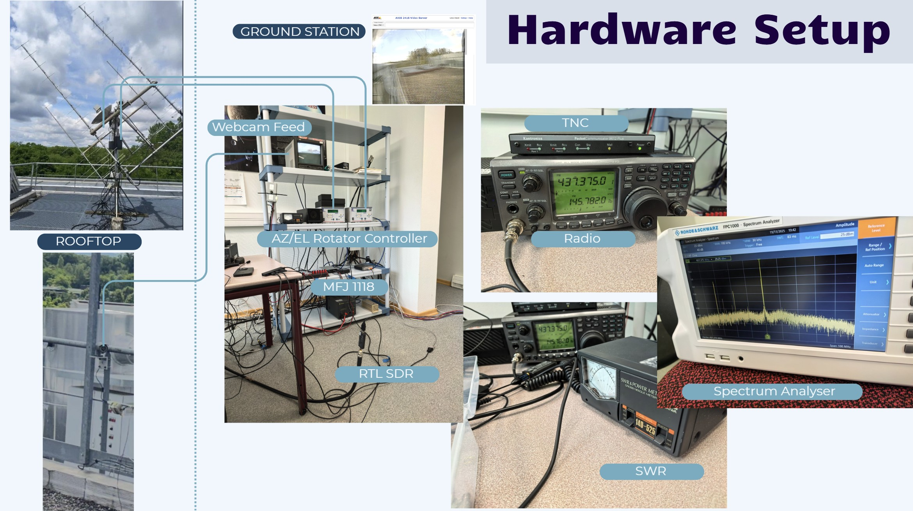
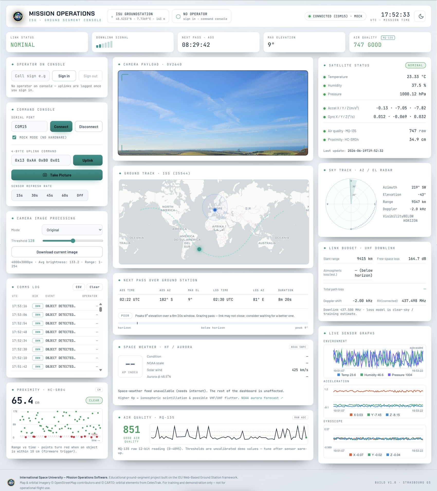
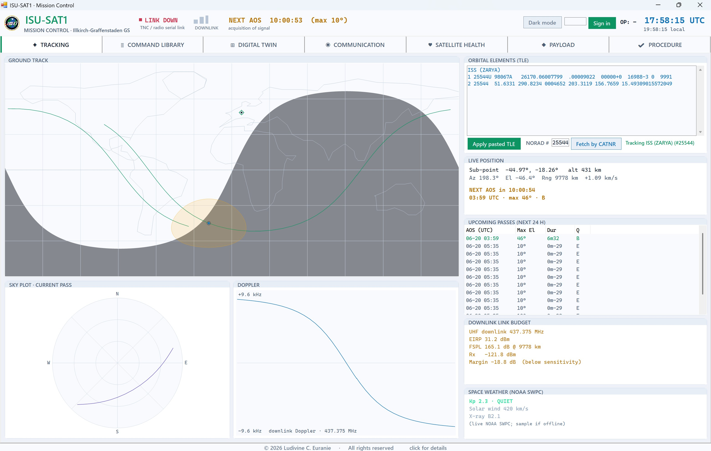
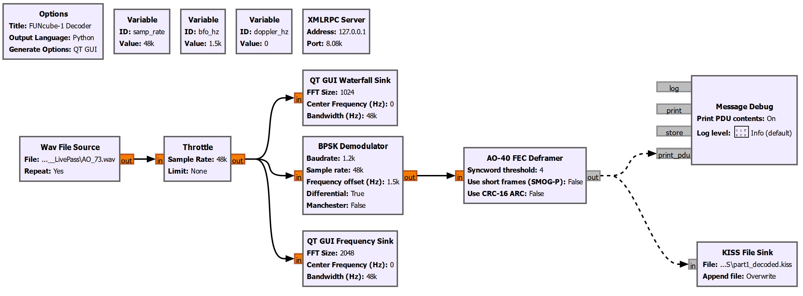
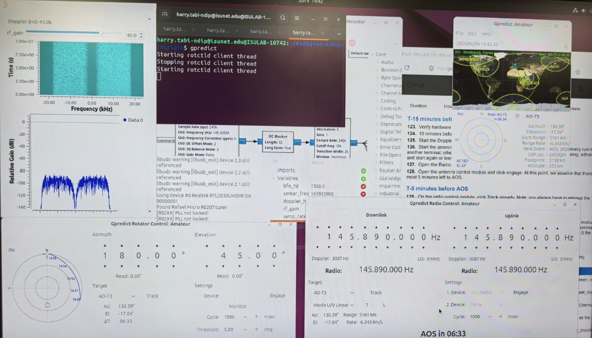

01Why this project
Over two weeks at the International Space University, we operated the real ISU ground station from end to end — configure the hardware, measure the RF chain, track and decode satellite signals — then re-implemented its functions three times in software, each at a higher level of abstraction. The point was not to write one perfect ground station application. It was to traverse the full abstraction ladder: from a prototype RF link standing in for a satellite, through an operational radio with a tabbed mission-control UI, down to a software-defined receive chain that turns RF into bits in GNU Radio. Each level of the ladder makes a different trade-off between fidelity, control, and cost — and seeing all three on the same hardware in the same fortnight makes those trade-offs concrete.
The workshop frame was also explicitly commercial. Ground stations span two to three orders of magnitude in cost (~$50K for a hobby-grade UHF/VHF station to several million dollars for an instrumented, full-availability site) depending on band, gain, automation, and redundancy, and Ground Station as a Service is now a real product category with real customers. The C# mission control was designed against that brief: what would a customer actually need from a mission-control front end, sitting on top of a hardware comms layer that already works?

02The real station — hardware
The first nine workshop tasks were on the physical station: identify every component on the rooftop and in the control room, build the system block diagram, verify the wiring against an Interface Control Document (ICD) table, take RF measurements, and harden the configuration against the failure modes the previous cohort had documented.
RF measurements — SWR and link budget
The standing-wave ratio of the UHF transmit chain was measured at 2.5 W (33.98 dBm), giving an SWR of 1.5:1. Transmitted power received was 96%, with 4% acceptable losses. The link budget for the receive chain was worked through alongside the SWR measurement so the station's downlink margin could be quantified before any live pass was attempted.
Verifying the station — FITSAT-1 CW decoding
Before re-implementing anything in software, the station's receive chain had to be proven on a real satellite signal. NIWAKA FITSAT-1's CW (Morse) beacon was used as the reference downlink — predictable cadence, well-documented identifier sequence, decodable by ear and by the station's existing CW decoder. The successful decode closed the loop on the hardware tasks: antennas pointed correctly, rotators tracking, radio tuned, TNC framing, decoder reading.
Hardening the operational procedures
Five additions to the station's operating procedures, in response to recurring outage modes from the previous workshop cohort:
- Rotator pointing fix. A persistent ~4° pointing error was characterised and corrected in the rotator controller calibration, recovering the margin lost on short-elevation passes.
- USB port binding. The two rotator axes were bound to fixed serial paths (Az =
ttyUSB0, El =ttyUSB1) so the headings cannot silently swap on reboot — an avoidable failure mode that had bricked previous passes. - Cable safety and management. All cables labelled at both ends, including the DC cut-off, with cable management ties to prevent strain on the connectors and remove the ambiguity that turns a five-minute fault into a thirty-minute one.
- Automation. The previously separate scripts (flowchart launcher, Doppler bridge, antenna bridge, GPredict) were consolidated behind a single interface so an operator does not have to remember a startup sequence under pass-window pressure.
- Documentation. A short manual covering the most common outage modes and their fixes, written so a future cohort can recover from each without re-deriving the diagnosis.
Each of these is small individually. Together they are the difference between a station that works when nothing goes wrong and a station that an operator can trust under time pressure — which is the actual functional requirement for a ground station that has to make AOS.
03Software 1 — Web-based prototype dashboard
The first software stack is the lowest-fidelity rung of the ladder: a Flask + ESP32 prototype using an XBee RF module to stand in for a satellite link. The hardware side is a payload board carrying a BME280 environment sensor, an MPU6050 IMU, an ultrasonic distance sensor, and an air-particle sensor; the ground side is a Flask backend (app.py) served at 127.0.0.1:5000 with a live serial parser (gs_serial.py) reading framed payload telemetry over XBee.
I started from a basic working version provided by the workshop professor — a stripped-down Flask app that could read the XBee serial port and print packets to a page — and rebuilt the dashboard around it without touching the serial layer. The enhancements: a live camera feed pane, a four-byte uplink command console, an ISS ground-track map and an Az/El sky-track view, full sensor telemetry display, and an air-quality readout derived from the particle sensor. The result is closer in spirit to a CubeSat operations console than to a sensor demo, even though the RF link itself is short-range and terrestrial.

04Software 2 — Visual Studio mission control (C#)
The second stack is the operational rung — running on the real station hardware (IC-910H radio + TNC) against a real CW/FM downlink path. This is the piece I am most proud of, and the framing matters.
I started from a basic ISU-SAT1 application provided by the workshop professor — a single-form WinForms project (C#, .NET Framework 4.7.2) that could connect to the TNC, send 11-byte command frames, and receive a downlink terminal. The original was operational but spartan: one window, no tracking, no command library, no health view, no procedure support. The design rule I set for myself was strict: do not change anything that talks to the radio. Every method touching the serial ports, the CI-V interface, KISS framing, or AX.25 conversion was preserved byte-for-byte from the original, including the exact control names the method bodies depend on. The header in the source still reads “HARDWARE — VERBATIM FROM Form1.cs” over the copied code. The original entry point is kept as a single commented fallback line in Program.cs: if anything ever misbehaves at the station, switching two lines reverts to the precise software that was flying before.
Above that preserved layer, I designed a tabbed mission-control front end around a single product question: what would a customer of a Ground Station as a Service actually need to see and do during a pass? The answer became five tabs and a persistent header:
- Communication — the original operations window, restyled. Connect TNC + radio, select CW/FM, compose and transmit the 11-byte command, watch the downlink terminal. Behaviour on the wire is byte-identical to the original.
- Tracking — live ground track on an embedded world map, polar sky plot, Doppler curve, next-pass and 24-hour pass table, downlink link budget, NOAA SWPC space-weather snapshot. TLEs editable inline or fetched by CATNR from Celestrak, with graceful offline degradation.
- Command Library — full command dictionary with subsystem filter and search; a composer that builds the exact 11-byte frame and loads it into the Communication tab; a live command register stamped with timestamp, direction, operator, and bytes.
- Satellite Health — subsystem status grid plus the 81-byte HK decoder (with verified battery-voltage calibration) and the CW beacon decoder (Type-1 power, Type-2 ADCS).
- Payload — one card per payload (MCAM, IMGCLS, S&F, APRS, DLP, PINO) with quick-command buttons that route through the composer back into the Communication tab.
A persistent header across all tabs carries operator sign-in, the link state light, UTC and local clocks, a downlink signal indicator, and the next-AOS countdown — the four things an operator needs glanceable at any moment during a pass window. A Digital Twin and a Procedure Checklist round out the operations envelope so a session has a defined path from setup through close-out.
The point of this design exercise was not novelty. It was to demonstrate that the engineering discipline of preserve what works and the product discipline of design around the operator's actual job are not in tension — they live in different layers of the application, and a clean separation between them lets each be done well.

05Software 3 — SDR + GNU Radio (and the AO-73 live pass)
The third stack is the software-defined rung. Instead of using the IC-910H and the TNC as the receive chain, RF goes through an RTL-SDR dongle directly into a GNU Radio flowgraph that does demodulation, framing, and decoding in software. Same antenna, same downconversion, but everything from the IF down is replaced by signal-processing blocks.
Two pipelines were built. The first decodes BPSK at the rates used by AO-73's telemetry mode; the second decodes AFSK at packet-radio rates for satellites that beacon over AX.25. Both flowgraphs were assembled in the GNU Radio Companion against recorded passes before being committed to live use.

Live AO-73 pass
The closing demonstration of the workshop was a live AO-73 (FUNcube-1) pass, decoded end-to-end with the SDR pipeline on the real station hardware. AO-73 was chosen because its FUNcube telemetry format is well documented, its orbit gives reliable European passes, and it broadcasts continuously when illuminated — meaning the pass quality is bounded by the station, not the spacecraft. Mission control on one screen, decoded output streaming on the other, and the bytes coming out of the GNU Radio flowgraph aligned with the published FUNcube frame structure. That alignment is what closes the abstraction ladder: the hardware does what the block diagram says it does, the SDR does what the link budget says it should, and the bits at the end mean what the spacecraft says they mean.

06Business takeaway — Ground Station as a Service
The workshop's commercial frame was Ground Station as a Service. Ground stations span two to three orders of magnitude in cost — from roughly $50K for a hobby-grade UHF/VHF setup to several million dollars for a large dish with full polarisation diversity, full automation, and certified availability. Most space-sector customers do not need to own one. They need scheduled access, calibrated equipment, qualified operators, and a tolerable failure rate.
The most interesting strategic lever in this market is not the individual station — it is the network. A federation of geographically distributed stations can predict and route around pass failure, hand off long passes between sites, and offer aggregate availability that no single station can match. The C# mission control was designed with this in mind: operator sign-in, link-state telemetry, command register, and Digital Twin are all features a station-as-a-service operator would surface to a customer, not features a single graduate student needs for one pass.
07What I contributed
The professor's rule for this workshop was that each student produced their own technical results independently, with groups of four consolidating only for the final presentation. I completed all nine hardware tasks on the real station — system identification, configuration, SWR measurement, link budget, FITSAT-1 CW decoding, plus the five hardening additions to the operational procedures. I enhanced both software stacks from baselines provided by the workshop professor, preserving the hardware comms layer in each case while extensively rebuilding the application layer above it. The C# mission control is the piece I am most proud of: I designed it around a Ground Station as a Service product brief and built out Tracking, Command Library, Digital Twin, Satellite Health, Payload, and Procedure Checklist on top of a Communication tab whose hardware-talking code is byte-for-byte the original. The third workflow — GNU Radio BPSK and AFSK pipelines on RTL-SDR — was the climax: I used it to decode a live AO-73 telemetry pass. For the workshop's joint presentation I was one of the presenters.
08Why this is on a space-engineering portfolio
Ground stations are the part of the space segment most people do not think about until a satellite goes silent. They are also where the engineering discipline of do not break the link meets the product discipline of make the operator's job legible. Two weeks on a real station — building, measuring, hardening, re-implementing three ways, and closing on a live pass — is the most compact way to internalise both at once. The instincts transfer directly to agency and prime ground-segment work: ICD discipline, calibration and verification before claim, preservation of qualified comms code under modernisation pressure, and design of operator interfaces around the actual cadence of a pass. The same instincts apply at scale.